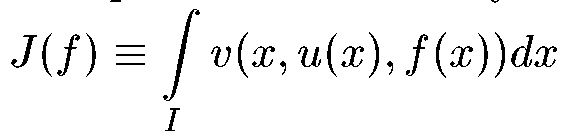

|
|
|
|
|
|
|
|
Conferences Worldwide:
| ICINCO 2012 | |
| 9th International Conference on Informatics in Control, Automation and Robotics | |
| Rome, Italy, July 28-31, 2012. |
| MED 2012 | |
| 20th Mediterranean Conference on Control and Automation | |
| Barcelona, Spain, July 3-6, 2012. |
| OCDGND 2012 | |
| 12th Viennese Workshop on Optimal Control, Dynamic Games and Nonlinear Dynamics | |
| Vienna, Austria, May 30 - June 2, 2012. |
Bookshelf:
| S. N. Dashkovskiy, D. V. Efimov, and E. D. Sontag (Automation and Remote Control, 2011, Vol. 8) (in Russian) | |
| Input to State Stability and Allied System Properties | |
| PDF, 409 KB |
Conferences in Russia:
| STAB' 12 | |
| XII-th International Conference "Stability and Oscillations of Nonlinear Control Systems (Pyatnitskiy's conference)" | |
| Institute of Control Sciences of RAS, Moscow, Russia, June 5-8, 2012. |
Conferences Worldwide:
| ECC13 | |
| European Control Conference | |
| Zurich, Switzerland, July 17-19, 2013. |
| ICARCV 2012 | |
| 12th International Conference on Control, Automation, Robotics and Vision | |
| Guangzhou, China, December 5-7, 2012. |
| ATACCS'2012 | |
| 2nd International Conference on Application and Theory of Automation in Command and Control Systems | |
| London, UK, May 29-31, 2012. |
| ACODS | |
| Hybrid Systems: Computation and Control | |
| Beijing, China, April 17-19, 2012. |
| SYSCON 2012 | |
| IEEE Systems Conference | |
| Vancouver, British Columbia, Canada, March 19-23, 2012. |
| ACODS | |
| Advances in Control and Optimization of Dynamical Systems | |
| Bangalore, India, February 16-18, 2012. |
Conferences Worldwide:
ADHS 2012 4th IFAC Conference on Analysis and Design of Hybrid Systems Eindhoven, The Netherlands, June 6-8, 2012.
Conferences Worldwide:
IFAC CHAOS 12 Third IFAC meeting related to analysis and control of chaotic Systems Cancun, Mexico, June 20-22, 2012.
Conferences in Russia:
DIST 2011 Distributed Intelligent Systems and Technologies Workshop St. Petersburg, Russia, September 28-30, 2011.
Conferences in Russia:
BOAC'2011 14th International Student Olympiad on Automatic Control (Baltic Olympiad) St. Petersburg, Russia, September 21-23, 2011.
Conferences in Russia:
ACE 2012 9th IFAC Symposium Advances in Control Education Nizhny Novgorod, Russia, June 19-21, 2012.
Conferences Worldwide:
DSMSI-2011 International Conference "Dynamical System Modeling and Stability Investigation" Kiev, Ukraine, May 25-27, 2011.
Conferences Worldwide:
Allerton 2011 49th Annual Allerton Conference on Communication, Control, and Computing Allerton House, University of Illinois, USA, September 28-30, 2011.
Conferences Worldwide:
ICSCD 11 The 11th International Conference "Stability, Control and Rigid Bodies Dynamics" Donetsk, Ukraine, June 8-11, 2011.
Conferences in Russia:
SICPRO '12 The Ninth International Conference on System Identification and Control Problems Moscow, Russia, January 30 - February 2, 2012.
Conferences in Russia:
DEGIT-XVI XVI conference on Dynamics, Economic Growth, and International Trade Saint-Petersburg, Russia, September 8-9, 2011.
Conferences Worlwide:
Robot intellect - 2011 The competition "Robot intellect - 2011" Kaunas, Lithuania, May 4-5, 2011.
TAAC International scientific conference of students and young scientists "Theoretical and Applied Aspects of Cybernetics" Kiev, Ukraine, February 21-25, 2011.
Conferences Worlwide:
DSCC 2011 The 4th Annual Dynamic Systems and Control conference Arlington, VA, USA, October 31 - November 2, 2011.
MSC 2011 2011 IEEE Multi-Conference on Systems and Control Denver, USA, September 28-30, 2011.
COIA2011 3rd International Conference on Control and Optimization With Industrial Applications Ankara, Turkey, August 22-24, 2011.
ICINCO 2011 8th International Conference on Informatics in Control, Automation and Robotics Noordwijkerhout, The Netherlands, July 28-31, 2011.
MED'11 The 19th Mediterranean Conference on Control and Automation Corfu Island, Greece, June 20-23, 2011.
NDES 2011 19th IEEE Workshop on Nonlinear Dynamics of Electronic Systems Indian Institute of Chemical Biology, Kolkata, India, March 9-11, 2011.
Special issue "Robust stability and control of large-scale nonlinear systems"
of the journal "Mathematics of Control, Signals, and Systems."
Call for papers
Conferences Worlwide:
Physcon 2011 5th International Scientific Conference on Physics and Control Leon, Spain, September 5-8, 2011.
InECCE 2011 1st International Conference on Electrical, Control and Computer Engineering Kuantan, Pahang, Malaysia, June 21-22, 2011.
Conferences Worlwide:
CDCECC2011 50th IEEE Conference on Decision and Control and European Control Conference Orlando, Florida, USA, December 12-15, 2011.
CT11 SIAM Conference on Control and Its Applications Baltimore, Maryland, USA, July 25-27, 2011.
Conferences in Russia:
ICINS2011 18th Saint Petersburg International Conference on Integrated Navigation Systems St. Petersburg, Russia, 30 May - 01 June 2011.
Conferences Worlwide:
MICSD 2010 13th International conference "Modeling, Identification, Control Systems Design" Crimea, Ukraine, 12-19 Sept. 2010.
Conferences in Russia:
13th STUDENT OLYMPIAD ON AUTOMATIC CONTROL Saint Petersburg, May 26-28, 2010.
Conferences in Russia:
EXTREME ROBOTICS International Scientific-and-Technological Conference devoted to the 20-th Anniversary of EMERCOM of Russia Moscow, May 18 - 21, 2010.
ROBOTICS. VIEW INTO FUTURE International Scientific-and-Technological Seminar Saint-Petersburg, March 10, 11, 2010.
RUSYCON Electronic Journal:
Furtat I. B. (Astrakhan State Technical University, Russia) Decentralized time-suboptimal control of multiinput-multioutput systems In paper is considered decentralization robust optimal control of parametric and functionally by uncertain multicoherent plant. It is supposed that the scalar outputs of local subsystems are accessible measurement only each of which are used only in the subsystems. The purpose of control consists in translation of plant of an initial condition to final for the minimal time with the given accuracy. Full text (PDF, 288 Kb, in Russian)
Conferences Worldwide:
NecSyS'10 2nd IFAC* Workshop on Distributed Estimation and Control in Networked Systems Annecy, France, September 13-14, 2010.
Russian Journals:
"Control Sciences" (in Russian "Problemy Upravleniya") - Printed jornals
Conferences in Russia:
SIBIRCON 2010 IEEE Region 8 2nd International Conference "Computational Technologies in Electrical and Electronics Engineering" Irkutsk, Russia, July 11-15, 2010.
Conferences Worldwide:
IBCE'10 3rd International IFAC Workshop on Internet-based Control Education Orlando, Florida, USA, June 27-29, 2010.
Conferences Worldwide:
IWSSIP 2010 The 17th International Conference on Systems, Signals and Image Processing Rio de Janeiro, Brazil, June 17-19, 2010.
Conferences Worldwide:
ICARCV 2010 International Conference on Control, Automation, Robotics and Vision Singapore, December 7-10, 2010.
IEEE WCCI 2010 2010 IEEE World Congress on Computational Intelligence Barcelona, Spain, July 18-23, 2010.
BICS 2010 Brain Inspired Cognitive Systems Madrid, Spain, July 14-16, 2010.
Conferences Worldwide:
ALCOSP 2010 10th IFAC Workshop "Adaptation and Learning in Control and Signal Processing" Antalya, Turkey, August 26-28, 2010.
PSYCO 2010 4th IFAC Workshop "Periodic Control Systems" Antalya, Turkey, August 26-28, 2010.
Conferences Worldwide:
ICCPS-2010 ACM/IEEE First International Conference on Cyber-Physical Systems Stockholm, Sweden, April 13-14, 2010 .
CPSWEEK-2010 The Cyber-Physical Systems Week Stockholm, Sweden, April 12-16, 2010 .
Conferences Worldwide:
VCC' 10 The 1st Virtual Control Conference September 21-23, 2010.
Conferences in Russia:
STAB' 10 XI-th International Conference "Stability and Oscillations of Nonlinear Control Systems (Pyatnitskiy's conference)" Institute of Control Sciences of RAS, Moscow, Russia, June 1-4, 2010.
Conferences Worldwide:
WMSCI 2010 The 14th World Multi-Conference on Systemics, Cybernetics and Informatics Orlando, Florida, USA, June 29 - July 2, 2010.
Conferences Worldwide:
ISCAS 2010 2010 IEEE International Symposium on Circuits and Systems, "Nano-Bio Circuit Fabrics and Systems" Paris, France, May 30 - June 2, 2010.
Conferences Worldwide:
MSC 2010 The 2010 IEEE Multi-Conference on Systems and Control Yokohama, Japan, September 8-10, 2010.
Conferences Worldwide:
ICCA 10 The 8th IEEE International Conference on Control & Automation Xiamen, China, June 9-11, 2010.
Conferences in Russia:
ICINS 2010 17th Saint Petersburg International Conference on Integrated Navigation Systems St.Petersburg, 31 May - 02 June 2010.
Conferences Worldwide:
MTNS 2010 19th International Symposium on Mathematical Theory of Networks and Systems ELTE and MTA SZTAKI, Budapest, Hungary, July 5-9, 2010.
Bookshelf:
Electronic library, containing many classical and modern books and textbooks in control theory (in Russian, registration is required to download)
Conferences Worldwide:
MELECON 2010 15th IEEE Mediterranean Electrotechnical Conference IEEE Malta Section, University of Malta, Valletta, Malta, April 26-28, 2010.
Conferences Worldwide:
RA 2009 IASTED conference on Robotics and Applications (RA 2009) Cambridge, Massachusetts, USA, November 4 - 6, 2009.
Bookshelf:
Artificial Intelligence and Ray Kurzweil R.Kurzweil's site: www.kurzweilai.net
Bookshelf:
A.Zenkin Super-Induction Method: Logical Acupuncture of Mathematical Infinity
E.M. Furems, O.I. Larichev, G.V. Roizenson, A.V. Lotov, K. Miettinen Human behavior in a multi-criteria choice problem with individual tasks of different difficulties
Larichev, O. I. "Methological aspects of practical applications of system analysis" //Methodological Problems of Systems Approach and Systems Analysis
Conferences Worldwide:
CQIQC Conference on Quantum Information & Quantum Control the Fields Institute, Toronto, Canada, August 24-27, 2009.
Conferences Worldwide:
ROSNS Workshop on Resonance Oscillations and Stability of NonsmoothSystems Imperial College London, United Kingdom, 16 June - 25 June, 2009.
Conferences in Russia:
DIST2009 Workshop Distributed Intelligent Systems and Technologies St. Petersburg State Polytechnic University, St. Petersburg, Russia, June 8-10, 2009.
Conferences Worldwide:
Nonlinear 09 Nonlinear analysis and applications.
Conference of memory of corresponding member of National Academy of Science of Ukraine Valery Sergeevich MelnikKyiv, Ukraine, 2-4 April, 2009.
Conferences Worldwide:
ECT-2009 The 4th International Conference on Electrical and Control Technologies Kaunas, Lithuania, 7-8 May, 2009.
CHAOS'09 2nd IFAC Conference on Analysis and Control of Chaotic Systems Queen Mary, University of London, UK, 22-24 June, 2009.
CDC 2009 Combined 48th IEEE Conference on Decision and Control and 28th Chinese Control Conference Shanghai, China , December 16-18, 2009.
NOLCOS 2010 8th IFAC Symposium on Nonlinear Control Systems University of Bologna, Italy, September 01-03, 2010.
Conferences Worldwide:
MSNDC (IDECT2009) 7th International Conference on Multibody Systems, Nonlinear Dynamics, and Control San Diego, USA, August 30 - September 2, 2009.
Conferences in Russia:
PWS Sixth St. Petersburg Workshop on Simulation St. Petersburg State University, St. Petersburg, Russia, June 30 - July 4, 2009.
Conferences Worldwide:
IFAC 2011 IFAC 18th World Congress 2011 Milan, Italy, August 28 - September 2, 2011.
PHYSCON 2009 4th International Scientific Conference on Physics and Control Catania, Italy, September 1-4, 2009.
ECC'09 European Control Conference Budapest, Hungary, August 23-26, 2009.
Conferences in Russia:
ICINS 09 16th Saint Petersburg Internation Conference on Integrated Navigation Systems Saint Petersburg, May 25-27, 2009.
Conferences in Russia:
MSC 2009 3rd IEEE Multi-conference on Systems and Control Saint Petersburg, July 8-10, 2009.
AGNFCS 09 Workshop Aerospace Guidance, Navigation and Flight Control Systems Samara, June 30 - July 2, 2009.
INCOM 09 13th IFAC Symposium on Information Control Problems in Manufacturing Moscow, June 3-5, 2009.
On july 6-11 the 17th IFAC World Congress on Automatic Control took place in Seoul, Korea.
It had a record number of almost 3000 participants. 2716 papers were presented at 423 sessions, including 288 papers from China, 265 from France, 217 from Korea, 211 from Japan, 194 from USA,... 70 from Russia. The Russian delegation had a record number of 106 participants.
The next, 18th IFAC World Congress will take place in Milano, Italy, in 2011.
Before the Closing Ceremony 14 eminent scientists were awarded as IFAC Fellows, including the Chairman of the Russian National Committee of Automatic Control Prof Alexander Borisovich Kurzhanski. Congratulations!
Academicians and corresponding members of RAS, in the areas related to systems and control
Conferences in Russia:
EUROCON 2009 International Conference devoted to 150 Anniversary of Alexander Popov St. Petersburg, May 18-23, 2009.
PTA-Ural 2008 Progressive Technologies in Automation Yekaterinburg, December 2-4, 2008.
PTA-2008 Progressive Technologies in Automation Moscow, October 1-3, 2008.
Groups in Russia:
Department of Applied Cybernetics St.Petersburg State University
Distributed Intelligent Systems Department S St.Petersburg State Polytechnic University
Conferences in Russia:
4ECSC 4th European Conference On Structural Control St.Petersburg, September 8-12, 2008.
Societies, Funds:
International Physics and Control Society (IPACS)
Conferences Worldwide:
MCS 2008 IEEE Multi-conference on Systems and Control San Antonio, Texas, USA, September 3-5, 2008.
Conferences in Russia:
Stab'08 X International Workshop tability and Oscillations of Nonlinear Control Systems Moscow, June 3 - 6, 2008.
Conferences Worldwide:
CDC 2008 IEEE 47th Conference on Decision and Control Cancun, Mexico, December 9-11, 2008.
SMC'08 IEEE International Conference on Systems, Man and Cybernetics Singapore, October 12-15, 2008.
CCDC'08 IEEE Chinese Control and Decision Conference Yantai, Shandong, China, July 2-4, 2008.
HSCC'08 IEEE 11th International Conference on Hybrid Systems: Computation And Control St. Louis, MO, USA, April 22-24, 2008.
SSST'08 IEEE 40th Southeastern Symposium on System Theory New Orleans, LA, USA, March 16-18, 2008.
ISCCSP'08 IEEE 3rd International Symposium on Communications, Control and Signal Processing Malta, March 12-14, 2008.
Databases on systems and control:
Information portal for developers of embedded systems.
Conferences in Russia:
Annual exhibition and conference on automation and embedded systems in Saint Petersburg St.Petersburg, Russia, May 14-16, 2008.
Bookshelf:
A.L. Fradkov. "Introduction to Cybernetical Physics" (Institute of Informatics and Automation of Chech Academy of Sciences (UTIA), Prague, Nov.1, 2006).
A.L. Fradkov. "Control of Complex Systems" (European Commission ICT InfoDays, Brussels, May 23, 2007)
A.L. Fradkov. "Introduction to Cybernetical Physics" (Lecture for students of Math-Mech. Faculty of St.Petersburg University on March 17, 2007, in Russian)
(See Objective 3.7. Networked Embedded and Control Systems) Call 2 for proposals: Deadline Oct.9, 2007.
Funds worldwide:
European Commission: 7th Research Framework Programme (FP7)
European Commission-FP7/Information and Communication Technologies (ICT)
Organizations and Funds in Russia:
The Instrumentation, Systems, and Automation Society (ISA) Headquarters in Russian Federation
Conferences in Russia:
ICINS'08 15th Saint Petersburg International Conference on Integrated Navigation Systems St.Petersburg, Russia, May 26-28, 2008.
Conferences Worldwide:
MIC2008 27th IASTED International Conference on,Modelling, Identification and Control Innsbruck, Austria, February 11-13, 2008.
Bookshelf:
Journal ECRIM Special Theme: EMBEDDED SYSTEMS
Conferences Worldwide:
The 2nd IEEE Multi-conference on Systems and Control (MSC) San Antonio, Texas, September 3-5, 2008
RTAS/HSCC/IPSN 2008, Cyber-Physical Systems Week St. Louis, MO USA, April 22-24, 2008
Conferences Worldwide:
13th International Power Electronics and Motion Control Conference (EPE/PEMC 2008) September 01 - 03, Poznan, Poland, 2008.
IEEE International Conference on Robotics and Automation (ICRA) May 19 - 23, Pasadena, CA, 2008.
IEEE International Symposium on Circuits and Systems (ISCAS) May 18 - 21, Seattle, WA, 2008.
IEEE International Conference on Networking, Sensing and Control (ICNSC) April 06 - 08, Sanya, China, 2008.
10th IEEE International Workshop on Advanced Motion Control (AMC) March 26 - 28, Trento, Italy, 2008.
AACC IFAC Conference, American Control Conference ACC (in cooperation with IFAC) July 12 - 14, Seattle, USA, 2008.
Exhibitions:
3rd international exhibition "Progressive technologies in automation" (PTA-NW St.Petersburg 2007) Russia, Saint Petersburg, 15-17 may 2007.
14 international specialized exhibition "Power industry and electrical engineering" Russia, Saint Petersburg, 15-18 may 2007.
Conferences Worldwide:
ROVISP'07 Int. Conf. on Robotics, Vision, Information, and Signal Processing. November 28-30, Penang, Malaysia, 2007.
Added new link to IFORS Conferences Database
Nonlinear Dynamics, Complexity and Chaos:
Russian nonlinear society
Bookshelf:
Unsolved Problems in Mathematical Systems and Control Theory Edited by Vincent D. Blondel and Alexandre Megretski
Conferences Worldwide:
3rd International Conference on Physics and Control (PhysCon 2007) September 3-7, Potsdam, Germany, 2007.
IEEE Multiconference on Systems and Control (MSC) October 1-3, Singapore, 2007.
16th IEEE Conference on Control Applications (CCA) October 1-3, Singapore, 2007.
22nd IEEE International Symposium on Intelligent Control (ISIC) October 1-3, Singapore, 2007.
Conferences Worldwide:
IFAC World Congress July 06 - 11, Seoul, KOREA, 2008.
IFAC Symposium System Structure and Control October 17-19, Foz do Iguacu, BRAZIL, 2007.
IFAC /ASME 5th Symposium Advances in Automotive Control August 20-22, Seascape Res, Aptos, USA, 2007.
IFAC IFORS, IMACS, IFIP Symposium Large Scale Systems: Theory and Applications - 11th July 23-25, Gdansk, POLAND, 2007.
IFAC Symposium Automatic Control in Aerospace June 25-29, Toulouse, FRANCE, 2007.
Conferences Worldwide:
IFAC Workshop Dependable Control of Discrete Systems (IFAC DCDS'07) June 13-15, Paris, FRANCE, 2007.
IFAC Symposium DYnamics and COntrol of Process Systems, DYCOPS-8 June 06-08, Cancun, MEXICO, 2007.
Databases on Systems and Control:
- Animated Control Systems Tutorials,
- Control Education Web sites,
- Control Engineering Textbook Titles,
- Control Systems Applications,
- Control Theory - Timeline Data,
- History of Control - Timeline Data,
- Web-based Control Experiments
are provided
Conferences Worldwide:
Workshop on mathematical control theory and finance. April 10-14, ISEG, Lisbon, 2007.
Conferences Worldwide:
5th Junior European Meeting on "Control and Information Technology" September 19-23, 2006 Tallinn, Estonia.
Conferences Worldwide:
ACC'07 July 11-13, 2007 American Control Conference 2007 New York City, USA.
Conferences Worldwide:
AIM 2007 September 04-07, 2007 IEEE/ASME International Conference on Advanced Intelligent Mechatronics Zurich, Switzerland.
MED 2007 June 27-29, 2007 IEEE Mediterranean Conference on Control & Automation Athens, Greece.
RoMoCo 2007 June 11-13, 2007 6th Workshop on Robot Motion and Control Bukowy Dworek, Poland.
ICRA 2007 April 10-14, 2007 IEEE International Conference on Robotics and Automation (ICRA) Roma, Italy.
Public lecture of Prof. Rudolf Kalman
A core problem in system theory - history, progress and hopes. Fri, 22 May 2006, 11.00 a.m., St.Petersburg House of Scientists, White Hall (Dvortsovaya nab., 26, near the Hermitage) Attendance is free.
Conferences in Russia:
NDA' 2007 International Congress Nonlinear Dynamical Analysis 2007 In honor of Academician A. M. Lyapunov 150th anniversary S.-Petersburg State University, S.-Petersburg, 4-10 june, 2007.
Conferences Worldwide:
European Modelling Symposium 2006 September 11-12, 2006 London, UK.
Eurosim'2007 6th Eurosim Congress on Modelling and Simulation September 9-13, 2007 Ljubljana, Slovenia.
Bookshelf:
D. S. Bernstein, "A Student's Guide to Classical Control," IEEE Contr. Sys. Mag., Vol. 17, pp. 96-100, August 1997.
D. S. Bernstein, "Control Experiments and What I Learned From Them: A Personal Journey," IEEE Contr. Sys. Mag., Vol. 18, pp. 81-88, April 1998.
D. S. Bernstein, "A Student's Guide to Research," IEEE Contr. Sys. Mag., Vol. 19, pp. 102-108, February 1999.
D. S. Bernstein, "Enhancing Control Education," IEEE Contr. Sys. Mag., Vol. 19, pp. 40-43, October 1999.
D. S. Bernstein, "On Bridging the Theory/Practice Gap," IEEE Contr. Sys. Mag., Vol. 19, pp. 64-70, December 1999.
D. S. Bernstein, "Peer Review," IEEE Contr. Sys. Mag., Vol. 20, pp. 8-11, June 2000.
D. S. Bernstein and L. G. Bushnell, "The History of Control: From Idea to Technology," IEEE Contr. Sys. Mag., Vol. 22, pp. 21-23, April 2002. (5Mb).
Conferences Worldwide:
ECC'07 July 2-5, 2007 European Control Conference 2007 Kos, Greece.
Conferences in Russia:
14th Saint Petersburg International Conference on Integrated Navigation Systems. St.Petersburg, Russia, May 28-30, 2007.
New books of russian authors:
Saint-Petersburg olympiads on cybernetics. /Ananyevskiy M.S., Boltunov G.I., Zaicev U.E., Matveev A.S., Fradkov A.L., Shiegin V.V. /Ed. by A.L.Fradkov, M.S.Ananyevskiy. St.Petersburg: Nauka, 2005. - 332p. (In Russian).
D.V. Efimov. Robust and adaptive control of nonlinear oscillatons (In Russian). St.Petersburg: Nauka, 2005. - 314p. ISBN 5-02-025093-7.
Conferences in Russia:
ENOC'08 6th Euromech Nonlinear Dynamics Conference Saint-Petersburg, June 30 - July 4, 2008.
SICPRO'07 6th International Conference "System Identification and Control Problems" Moscow, Junary 29 - February 1 , 2007.
BOAC'06 Baltic Olympiad on Automatic Control Saint-Petersburg, Russia, May 17-19, 2006.
Databases on Systems and Control:
New subsection is introduced: History of Control Theory, Cybernetics, Informatics.
Principia Cybernetica Web.
The Alan Turing Home Page.
Cybernetics projects, Physics, and High Voltage.
Cybernetics and Information Theory in the United States, France and the Soviet Union David Mindell (MIT), Jerome Segal (Max Planck Institute for the History of Science, Berlin), Slava Gerovitch (Dibner Institute for the History of Science and Technology and the Russian Academy of Sciences) [Science and Ideology: A Comparative History, Mark Walker (dir.), Routledge, London, 2003, pags. 66-95].
Slava Gerovich homepage. From Newspeak to Cyberspeak: A History of Soviet Cybernetics (MIT Press, 2002)
C.Francois. Systemics and cybernetics in a historical perspective (pdf document) More related papers of Charles Francois: http://www.uni-klu.ac.at/~gossimit/ifsr/francois/.
Conferences in Russia:
ALCOSP'07 9th IFAC Workshop "Adaptation and Learning in Control and Signal Processing" Saint Petersburg, Russia, August 29-31, 2007.
PSYCO'07 3th IFAC Workshop "Periodic Control Systems" Saint Petersburg, Russia, August 29-31, 2007.
International Conference on Differential Equations and Dynamical Systems Suzdal, Russia, July 10-15, 2006.
Conferences Worldwide:
ECT 2006 International Conference on "Electrical and Control Technologies 2006" Kaunas, Lithuania, May, 4-5, 2006
Conferences in Russia:
The Second Biennial Conference on Cognitive Science Saint-Petersburg, Russia, 9-13 June, 2006.
Databases on Systems and Control:
History of Computing in Russia Site contains a few thousand of papers, documents, photos, related to all main events, facts and persons from the history of cybernetics and informatics in USSR and Russia.
Conferences in Russia:
3rd International Conference on Parallel Computations and Control Problems PACO 2006 Moscow, Russia, 2-4 october 2006.
Organizations and Funds in Russia:
IEEE Russia (North-West) Section Joint CI/CS/RA Chapter, St. Petersburg
Conferences in Russia:
3rd International Conference on Control Problems Moscow, Russia, June 19-22, 2006.
13th Saint Petersburg International Conference on Integrated Navigation Systems St.Petersburg, Russia, May 29-31, 2006.
MASR 2006 6th International Scientific School "Modelling and Analysis of Safety and Risk in Complex Systems" St. Petersburg, Russia, July 4 - 8, 2006.
SICPRO'06 5th International Conference "System Identification and Control Problems" Moscow, Junary 30 - February 2 , 2006.
Conferences Worldwide:
IEEE CSS (IEEE Control Systems Society) conferences
IEEE CIS (IEEE Computational Intelligence Society) conferences
IEEE RAS (IEEE Robotics and Automation Society) conferences
IEEE International Symposium on Intelligent Control Munich, Germany, Oct. 4-6, 2006.
IEEE Computer Aided Control Systems Design Munich, Germany, Oct. 4-6, 2006.
IEEE Conference on Control Applications Munich, Germany, Oct. 4-6, 2006.
Conferences Worldwide:
ECMS 2006 20th European Conference on Modelling and Simulation Bonn, Germany
EMCSR 2006 April 18 - 21, 2006 18th European Meeting on Cybernetics and Systems Research Vienna, Austria
Conferences Worldwide:
NOLCOS'07 August 22-24, 2007 7th IFAC Symposium on Nonlinear Control Systems Pretoria, South Africa
Conferences in Russia:
Stab'06 May 31 - June 2, 2006, E. S. Pyatnitskiy IX Internation Workshop "Stability and Oscillations of Nonlinear Control Systems" Moscow.
Conferences Worldwide:
Controlo'06 September 11-13, 2006 7th Portuguese Conference on Automatic Control Lisbon, Portugal
2nd African Control Conference July 5-7, 2006 2nd African Control Conference Durban, South Africa
ROCOND'06 July 5-7, 2006 IFAC Symposium on Robust Control Design Toulouse, France
IFAC 50th Anniversary Celebration September 15, 2006 International Conference on Present and Future of Automatic Control Heidelberg, Germany
Conferences in Russia:
Control theory and information technologies 2005 All-Russian scientific conference "Control theory and information technologies" (in Russian). Saint Petersburg, June 30 - July 2 , 2005.
New Books of Russian Authors (In Russian).
New Books of Russian Authors:
Physical Fundamentals of Oscillation Theory. Chechurin S.L., Chechurin L.S. SPb State Polytechnical University, 2005. 258 p. (in Russian). ISBN 5-7422-0850-2.
New Books of Russian Authors:
Study of Linear Matrix Inequalities. A Software Companion. Alexander N. Churilov and Alina V. Gessen. Izdatelstvo Sankt-Petersburgskogo universiteta, 2004 (in Russian).
Control in physical and technical systems. Ed. by A. L. Fradkov. St.Petersburg: Nauka, 2004 (In Russian).
Conferences in Russia:
SCP 2005 "Stability and Control Processes" Conference dedicated to 75th birthday anniversary of V. I. Zubov Saint Petersburg, June 29-July 1, 2005
Conferences Worldwide:
CHAOS'06 June 28-30, 2006 1st IFAC Conference on Analysis and Control of Chaotic Systems Reims, France
CSCS 15 May 25-27, 2005 15th International Conference on Control Systems and Computer Science Bucharest, Romania
Conferences in Russia:
"110 Anniversary of Radio Invention" The International Scientific Conference Saint Petersburg, May 18-21, 2005
Conferences Worldwide:
MECHATRONICS 2006 September 12-14, 2006 4th IFAC Symposium on Mechatronic Systems Wiesloch/Heidelberg, Germany
SYROCO 2006 September 6-8, 2006 8th International IFAC Symposium on Robot Control Bologna, Italy
ACE 2006 June 21-23, 2006 IFAC Symposium on Advances in Control Education Madrid, Spain
ACC 2006 June 14-16, 2006 2006 American Control Conference Minneapolis, Minnesota, USA
ADHS 2006 June 7-9, 2006 6th IFAC Conference on the Analysis and Design of Hybrid Systems Alghero, Italy
5th MATHMOD February 08-10, 2006 Fifth International Symposium on Mathematical Modelling Vienna, Austria
ACSE-05 December 19-21, 2005 The International Automatic Control and System Engineering Conference Cairo, Egypt
ICINCO 2005 September 14-17, 2005 2nd International Conference on Informatics in Control, Automation and Robotics Barcelona, Spain
CCA'05 August 28-31, 2005 2005 IEEE Conference on Control Applications Toronto, Canada
Conferences in Russia:
PhysCon 2005 2nd International Conference "Physics and Control 2005" Saint Petersburg, August 24-26, 2005
ALC 2005 The 9th Asian Logic Conference Novosibirsk, August 16-19, 2005
12th Saint-Petersburg International Conference on Integrated Navigation Systems St.Petersburg, May 23-25, 2005
Sites on Nonlinear Dynamics, Complexity and Chaos:
New Books of Russian Authors:
Abel's Theorem in Problems and Solutions V.B. Alekseev Kluwer Academic Publishers, 2004
Normal Forms, Bifurcations and Finiteness Problems in Differential Equations Edited by Yu. Ilyashenko, C. Rousseau Kluwer Academic Publishers, 2004
Interactive Decision Maps A.V. Lotov, V.A. Bushenkov, G.K. Kamenev Kluwer Academic Publishers, 2004
Multiparameter Stability Theory with Mechanical Applications A.P. Seyranian, A.A. Mailybaev World Scientific Publishers, 2004
New Trends in Integrability and Partial Solvability Edited by A.B. Shabat, A. Gonzalez-Lopez, M. Mamas, L. Martinez Alonso, M.A. Rodriguez Kluwer Academic Publishers, 2004
Stability of Stationary Sets in Control Systems with Discontinuous Nonlinearities V.A. Yakubovich, G.A. Leonov, A.Kh. Gelig World Scientific Publishers, 2004
Nonlinear Problems in Mathematical Physics and Related Topics II Edited by M.Sh. Birman, S. Hildebrandt, V.A. Solonnikov, N.N. Uraltseva Kluwer Academic Publishers, 2003
Wave Processes in Solids with Microstructure V.I. Erofeyev World Scientific Publishers, 2003
The Calculus of Variations and Functional Analysis With Optimal Control and Applications in Mechanics L.P. Lebedev, M.J. Cloud World Scientific Publishers, 2003
Amplification of Nonlinear Strain Waves in Solids A.V. Porubov World Scientific Publishers, 2003
Quantum Communication and Information Technologies Edited by A.S. Shumovsky, V.I. Rupasov Kluwer Academic Publishers, 2003
Nanostructures: Synthesis, Functional Properties and Applications Edited by T. Tsakalakos, I.A. Ovid'ko, A.K. Vasudevan Kluwer Academic Publishers, 2003
Nonlinear Problems in Mathematical Physics and Related Topics I Edited by M.Sh. Birman, S. Hildebrandt, V.A. Solonnikov, N.N. Uraltseva Kluwer Academic Publishers, 2002
Information Sites on Science and Technology:
The Encyclopedia of Life Support Systems (EOLSS)The Encyclopedia of Life Support Systems (EOLSS) - an integrated compendium of SIXTEEN ENCYCLOPEDIAS developed under the auspices of UNESCO and published by Eolss Publishers, Oxford, UK has been released.
EOLSS contain 185 Theme volumes and about 55 millions of words.
In the Encyclopedia 5. PHYSICAL SCIENCES, ENGINEERING AND TECHNOLOGY there is the Theme volume 6.43 "Control Systems, Robotics and Automation" (see Table of Contents, PDF, 205 KB) with 239 planned contributions comprised by Honorary Theme Editor Prof. Heinz Unbehauen.
- EARTH AND ATMOSPHERIC SCIENCES
- MATHEMATICAL SCIENCES
- BIOLOGICAL , PHYSIOLOGICAL , AND HEALTH SCIENCES
- SOCIAL SCIENCES AND HUMANITIES
- PHYSICAL SCIENCES, ENGINEERING AND TECHNOLOGY
- CHEMICAL SCIENCES ENGINEERING AND TECHNOLOGY
- WATER SCIENCES, ENGINEERING AND TECHNOLOGY
- ENERGY SCIENCES, ENGINEERING AND TECHNOLOGY
- ENVIRONMENTAL AND ECOLOGICAL SCIENCES AND MANAGEMENT
- FOOD AND AGRICULTURAL SCIENCES AND ENGINEERING
- HUMAN RESOURCES POLICY AND MANAGEMENT
- NATURAL RESOURCES POLICY AND MANAGEMENT
- DEVELOPMENT AND ECONOMIC RESOURCES
- INSTITUTIONAL AND INFRASTRUCTURAL RESOURCES
- TECHNOLOGY, INFORMATION AND SYSTEM MANAGEMENT RESOURCES
- REGIONAL SUSTAINABLE DEVELOPMENT REVIEWS
Visit the online encyclopedia at www.eolss.net for further information on free trial access provisions (24 hrs for individuals and 30 days for Institutions) and special offers for subscription.
Conferences in Russia:
GraphiCon 2004 International conference on Computer Graphics Moscow, September 6-10, 2004
FSSCEF 2004 International Conference on Fuzzy Sets and Soft Computing in Economics and Finance Saint Petersburg, June 17-20, 2004
SCM'2004 VII International Conference on Soft Computing and Measurements Saint Petersburg, June 17-19, 2004
"Adaptive Robots - 2004" Work-Shop "Adaptive Robots and General Systems Logical Theory GSLT" (co-event of the Week of High Technologies in Russia \ Exhibition-Congress) Saint Petersburg, June 8-11, 2004 E-mail: li@rtc.ru, vepr@keldysh.ru
RUSYCON Electronic Journal:
M.S. Ananyevskiy (Saint Petersburg State University, Russia) Speed-gradient control for quantum-mechanical model of diatomic molecule The observables control problem for finite dimensional quantum diatomic molecule is examined. Applying Speed-Gradient algorithm to quantum model a new control algorithm is designed. It is proved that the control goal is achieved for initial conditions from a pretty large domain of phase space. It is shown that the control function can be arbitrary small. The results are illustrated by the numerical example for HF molecule. Full text (Zipped PS, 125 Kb, in Russian)
Conferences in Russia:
ICMAR 2004 12th International Conference on Methods of Aerophysical Research Novosibirsk, June 28 - July 4, 2004
DAOR'04 Conference "Discrete Analysis and Operations Research" Novosibirsk, June 28 - July 2, 2004
ICCM-2004 The International Conference on Computational Mathematics Novosibirsk, June, 21-25, 2004
CMDS-2004 International Conference "Computer Modelling of Dynamical Systems" Saint Petersburg, June 3-5, 2004
Conferences Worldwide:
"MET'04" September 23-25, 2004 IVth International Congress "Mechanical Engineering Technologies'04" Varna, Bulgaria
Conferences in Russia:
SICPRO'05 4th International Conference "System Identification and Control Problems" Moscow, January 25-28, 2005
Russian Technical Universities and Research Institutes:
Petersburg Nuclear Physics Institute
Publishers:
Conferences Worldwide:
XV International Conference on Systems Science September 7-10, 2004 Wroclaw, Poland
IBCE'04 September 5-7, 2004 Second IFAC Workshop on Internet Based Control Education Grenoble, France
Russian Journals:
"Mechatronics, Automation, Control" (in Russian)
Conferences in Russia:
ICCSC'04 2nd IEEE International Conference on Circuits and Systems for Communications" Moscow, June 30 - July 2, 2004
2004 IEEE Russia (NorthWest) Section Conference "SPb-IEEE Con'04" Saint Petersburg, June 9-10, 2004 E-mail: a.mikerov@ieee.org
Conferences Worldwide:
ENOC-2005 August 7-12, 2005 Mini-Symposium on Control of Chaos Eindhoven, The Netherlands
CSIMTA September 19-22, 2004 Conference on Complex Systems, Intelligence and Modern Technology Applications Cherbourg, France
Conferences in Russia:
"Stability and Oscillations of Nonlinear Control Systems" VIII International Workshop Moscow, June 2-4, 2004
"Navigation and Motion Control" (in Russian) 6th Conference of Young Scientists St.Petersburg, March 16-18, 2004
Conferences Worldwide:
ICCC 2004 May 25-28, 2004 International Carpathian Control Conference Zakopane, Poland
RUSYCON Electronic Journal:
E. Schoell, A. Amann, J. Schlesner, J. Unkelbach (Institut fuer Theoretische Physik, TU-Berlin, Germany), W. Just (Theoretische Physik I, TU-Chemnitz, Germany) Chaos control of nonlinear current oscillations in semiconductor heterostructures We study autosynchronization by time delayed feedback control of chaotic spatio-temporal patterns in spatially extended semiconductor models. Different control schemes, e.g., a diagonal control matrix, or global control, or combinations of both, are compared. In particular, we use two models of semiconductor nanostructures which are of current interest: (i) superlattice, (ii) double-barrier resonant-tunneling diode. Full text (GZipped PS, 540 Kb)
A. Amann, E. Schoell (Institut fuer Theoretische Physik, TU-Berlin, Germany), N. Baba (Max-Planck-Institut fuer Physik Komplexer Systeme, Germany), W. Just (Theoretische Physik I, TU-Chemnitz, Germany) Time delayed feedback control of chaos by spatio-temporal filtering Time delayed feedback control is employed to stabilise time periodic patterns in a reaction-diffusion model with global coupling. The control performance is increased by several orders of magnitude by suitable filters and couplings which are based on the Floquet eigenmodes of the unstable orbit. The essential mechanism for the improvement of the control performance is attributed to a phase synchronisation mechanism between the target state and the control loop. Full text (GZipped PS, 492 Kb)
New Books of Russian Authors:
Selected Topics in Vibrational Mechanics I. Blekhman World Scientific Publishers, 2003
Stochastic Dynamics of Reacting Biomolecules W. Ebeling, L. Schimansky-Geier, Yu.M. Romanovsky World Scientific Publishers, 2003
Observational Manifestation of Chaos in Astrophysical Objects A. Fridman, M.Ya. Marov, R. Miller Kluwer Academic Publishers, 2003
Aggregation in Large-Scale Optimization I. Litvinchev, V. Tsurkov Kluwer Academic Publishers, 2003
Impulsive Control in Continuous and Discrete-Continuous Systems B.M. Miller, E.Y. Rubinovich Kluwer Academic Publishers, 2003
Parametric Continuation and Optimal Parametrization in Applied Mathematics and Mechanics V.I. Shalashilin, E.B. Kuznetsov Kluwer Academic Publishers, 2003
Bifurcations and Chaos in Piecewise-Smooth Dynamical Systems Zh.T. Zhusubaliyev, E.Mosekilde World Scientific Publishers, 2003
Lyapunov-Schmidt Methods in Nonlinear Analysis and Applications N. Sidorov, B. Loginov, A. Sinitsyn, M. Falaleev Kluwer Academic Publishers, 2002
Adaptive Mechanics V.Yu. Tertychny-Dauri Kluwer Academic Publishers, 2002
Conferences in Russia:
PACO'2004 2nd International Conference on Parallel Computations and Control Problems Moscow, October 4-6, 2004
11th Saint-Petersburg International Conference on Integrated Navigation Systems Saint Petersburg, May 24-26, 2004
IPI(CALS)-2003 International Conference on Information Technologies in Product Life Cycle Management Saint Petersburg, November 25-26, 2003
Conferences Worldwide:
CDC-ECC'05 December, 2005 The European Control Conference and the IEEE Conference on Decision and Control Sevilla, Spain
ACC 2005 June 8-10, 2005 2005 American Control Conference Portland, Oregon, USA
ACC 2004 June 30 - July 2, 2004 2004 American Control Conference Boston, MA, USA
Virtual Bookstores:
Conferences in Russia:
VMT 2003 VI International scintific-technical conference "Vibrating machines and technologies" ursk, December 3-5, 2003
Conferences Worldwide:
CIRA 2005 August 26-27, 2005 IEEE International Symposium on Computational Intelligence in Robotics and Automation Helsinki University of Tech. Espoo, Finland
DAC 2005 June 6-10, 2005 42nd ACM/IEEE Design Automation Conference Moscone Center, San Francisco, CA
CDC 2004 December 14-17, 2004 43rd IEEE Conference on Decision and Control Atlantis Hotel, Nassau, Bahamas
CCA/ISIC/CACSD 2004 September 2-4, 2004 IEEE Conference on Control Applications, International Symposium on Intelligent Control, Computer Aided Control Systems Design The Grand Hotel, Taipei, Taiwan
ASCC - 2004 July 20-23, 2004 5th Asian Control Conference Grand Hyatt, Melbourne, Australia
WCICA 2004 June 14-18, 2004 5th World Congress on Intelligent Control and Automation Zhejiang University, Hongzhou, China
ICRA 2004 April 26 - May 1, 2004 IEEE International Conference on Robotics and Automation New Orleans Riverside Hilton & Towers in New Orleans, Louisiana
ICINCO 2004 August 25-28, 2004 International Conference on Informatics in Control, Automation and Robotics setbal, portugal
MIC 2004 February 23-25, 2004 The 23rd IASTED International Conference on MODELLING, IDENTIFICATION, AND CONTROL Grindelwald, Switzerland
Conferences Worldwide:
New books in Russian::
ALCOSP 04 and PSYCO 04 August 30 - September 1, 2004 IFAC Workshop on Adaptation and Learning in Control and Signal Processing, and IFAC Workshop on Periodic Control Systems Yokohama, Japan
Granichin O.N., Polyak B.T. Randomized estimation and optimization algorithms under almost any disturbances. Moscow: Nauka, 2003
Makarov I.M., Topcheev Yu.I. Robotics. History and perspectives. Moscow: Nauka, 2003
Matveev A.S., Yakubovich V.A. Optimal control systems: Ordinary differential equations. Special problems (textbook). St.Petersburg: St.Petersburg University Press, 2003
Besekerskii V.A., Popov E.P. Theory of automatic control systems St.Petersburg: Professiya, 2003
Leonenkov A.V. Fuzzy modeling in MATLAB and fuzzyTECH environments. St.Petersburg, BHV, 2003
Terekhov V.A., Efimov D.V., Tyukin I.Yu. Neural Net Control Systems. Textbook. Moscow: Vyshaya shkola, 2002
Lapko V.A. Nonparametric sets of decision rules. Novosibirsk: Nauka, 2002
Dorf R., Bishop R. Modern control systems. (transl. from English). Moscow: Laboratory of Basic Knowledge, 2002
Afanasiev V.N., Kolmanovsky V.B., Nosov V.R. Mathematical theory of control systems design, (3rd edition) Moscow: Vyshaya shkola, 2002
Semenenko M.G. Introduction to athematical modeling. Moscow: SOLON-R, 2002
Anfilatov V.S. System analysis in control. Moscow: Finansy i Statistika, 2002
Panteleev A.V. Optimization methods in examples and problems. Moscow: Vyshaya shkola, 2002
Mukhin V.I. Basics of control theory. Moscow: Examen, 2002
Esikadzu S. Miscrocomputer control system. First acquaintance (transl. from English). Moscow: Dodeka-XXI, 2001
Olsson G., Piani D. Computer Systems for Automation and Control (transl. from English). St.Petersburg: Nevskii Dialekt, 2001
Philips C., Harbor R. Feedback control systems.(transl. from English). Moscow: Laboratory of Basic Knowledge, 2002
Samarskii A.A., Mikhailov A.P. Mathematical modeling: Ideas, methods, examples. Moscow: Fizmatlit, 2001
Zaugolnov Yu.B. Optimal automatic control and radioautomation systems with generalized information (design of systems). Moscow: Radio i Svyaz, 2000
Brjukhanov V., Kosov M., Protopopov S. Theory of automatic control. Moscow: Vyshaya shkola, 2000
Cronover R. Fractals and chaos in dynamical systems Moscow: Postmarket, 2000
Teryaev E.D., Shamrikov B.M. Digital systems and stepwise adaptive control. Moscow: Nauka, 1999
Kardanskaya N.L., Chudakov A.D. Manufacture control systems. Analysis and Design: textbook. Moscow: Russkaya Delovaya Literatura, 1999
Russian Journals:
New books in Russian::
"EXPonenta Pro. Mathematics in applications" (in Russian) New journal in applied mathematics
A.P.Zhabko, A.V.Prasolov, V.L.Kharitonov Collection of problems and exersises on control theory: stabilization of program motions Moscow: Vyshaya shkola, 2003
B.T. Polyak, P.S. Scherbakov Robust stability and control Moscow.: Nauka, 2002
G.A. Leonov, M.M. Shumafov Stabilization problems of linear control systems SPb.: Isdat. S.-Petersburg university, 2002
I.V. Miroshnik Nonlinear systems. Analysis and control SPb.: SPbIFMO(TU), 2002
V.O. Nikiforov, A.V. Ushakov Control under conditions of uncertainty: sensitivity, adaptation an robustness SPb.: SPbIFMO(TU), 2002
Conferences in Russia:
Russian Journals:
BOAC 2004 10th International (Baltic) Student Olympiad on Automatic Control Saint Petersburg, May 26-28, 2004
Conferences in Russia:
"System Analysis ans Control" 8th International Conference Evpatoria, Ukraine, June 29 - July 6, 2003
APM 2003 XXXI International Summer School - Conference "Advanced Problems in Mechanics" St.Petersburg (Repino), June 22 - July 2, 2003
Educational Sites on Systems and Control:
Russian Organizations and Funds:
The Division of Information Technologies and Computation Systems of RAS (in Russian) Russian National Committee on Theoretical and Applied Mechanics (in Russian)
The page of the Saint-Petersburg Group of Russian National Committee on Automatic Control has been updated.
New paper in RUSYCON Electronic Journal:
S. Lahrech, A. Addou (Universite Mohamed I, Maroc) Sufficient conditions for elliptic problem of optimal control in the Sobolev space W01,2(I), where I is a bounded interval in R The paper is concerned with the local minimization problem far a variety of non Frechet-differentiable Gateau functional  in the Sobolev space , where u is the solution of the Dirichlet problem for a linear uniformly elliptic operator with nonhomogenious term f and
is the norm generated by metric space
. We use a recent extension of Frechet-Differentiability (approach of Taylor mappings see [1]), and we give various assumptions on v to guarantee a critical point is a strict local minimum. Finally, we give an example of a control problem, where classical Frechet differentiability can't be used and their approach of Taylor mappings works.
Full text (PS, 247 Kb)
RUSYCON Electronic Journal:
A.A. Bobtsov Robust Control Algorithm of Uncertain Object without Measurement of Derivatives of an Adjustable Variable Robust control scheme of uncertain object without measurement of derivatives of an adjustable variable (an output of object of control), providing under the assumptions to the object of control given in the paper, limitation of an adjustable variable and its convergence to some limited invariant set is offered. Procedure of synthesis is based on popular Morse approach, which in the literature has received the name of "adaptation algorithm of the high order". In contrast to adaptation algorithm of the high order, the offered scheme of robust control allows to synthesize regulators less bulky in dimension. In the paper the results of computer modelling, which illustrate the efficiency of the offered control scheme are given. Full text (PDF, 235 Kb, in Russian)
Conferences in Russia:
MAG-2003 International Conference on Mathematical Geophysics Novosibirsk, October 8-12, 2003
"Perspectives of System Informatics" Andrei Ershov Fifth International Conference Novosibirsk, July 9-12, 2003
ICONICS-2003 The International Conference on Image Problems Saint Petersburg, April 23-25, 2003
"Navigation and Motion Control" (in Russian) V Conference of Young Scientists Saint Petersburg, March 11-13, 2003
ASU-PP-2003 (in Russian) International Conference and Exhibition "Scientific Basis, New Principles and Experience of Industrial Enterprise's Automated Control Systems Development" Moscow, February 24-27, 2003
13th Winter School on Continuous Media Mechanics (in Russian) Perm, February 24 - March 1, 2003
"Problems of Theoretical and Applied Mechanics" (in Russian) Regional School and Conference of Young Scientists Ekaterinburg, January 27-31, 2003
Conferences in Russia:
DSPA-2003 (in Russian) 5th International Conference and Exhibition "Digital Signal Processing and Its Applications" Moscow, March 12-14, 2003
"Aerodynamics and Dynamics of Gases in the XXI Century" (in Russian) All-Russian Conference Moscow, January 27-30, 2003
"Mobile Robots - 2002" The Russian Youth Festival of Science and Technology Moscow, November 29 - December 9, 2002
Russian Journals:
Bookshelf:
D.S.Bernstein A student's guide to research PDF (IEEE Control Systems Magazine, V.19, N 1, 1999, pp. 102 -108)
D.S.Bernstein Peer review PDF (IEEE Control Systems Magazine., Vol. 20, N 3, 2000, pp. 8-11)
P. Halmos How to write mathematics (from Uspekhi matemeticheskih nauk, 1971, N 5, Russian translation)
N.M. Sergeev Ethics of coauthorship and ethics of quotaion (Russian chemical journal, 1999, N 6, in Russian)
M.V.Alfimov, A.N.Libkind, I.A.Libkind, V.A.Minin Information flows in RFBR: new approach to scientific citation (Vestnik RFBR, 2001, N 4, in Russian)
A.L.Fradkov How to publish a good paper and to reject a bad one: reviewers' notes PDF, 202 Kb (in Russian)
Conferences in Russia:
"Modelling and Analysis of Logic Controlled Dynamic Systems" IFAC Workshop Irkutsk, July 30 - August 1, 2003
Databases on Systems and Control:
Conferences in Russia:
SICPRO'04 3rd International Conference "System Identification and Control Problems" Moscow, January 28-30, 2004
"Mechanics and Tribology of Transport Systems" International Congress Rostov-on-Don, September 10-13, 2003
Exhibitions:
MERA'2003 4th Moscow International Instrument-Making and Industrial Automation Show Moscow, April 16-19, 2003
Information Sites on Science and Technology:
Organizations and Funds in Russia:
Academy of Technological Sciences of Russia (in Russian)
Russian Journals:
"Science and Life" (in Russian)
Conferences in Russia:
GPC-2003 "General Problems of Optimal Control and Their Applications. Problems of Teaching Mathematics" International conference devoted to the 100-th anniversary of A.N. Kolmogorov's birth. Tambov, May 11-16, 2003
Conferences Worldwide:
IFAC 2005 July 4-8, 2005 16th IFAC World Congress Prague, Czech Republic
NOLCOS 2004 September 1-3, 2004 6th IFAC Symposium on Nonlinear Control Systems Stuttgart, Germany
"Quantum Control: Mathematical and Numerical Challenges" October 6-11, 2002 Montreal, Canada
Conferences in Russia:
2004 Siberian Conference on Electron Devices and Materials (SIBEDEM) Tomsk, April 14-15, 2004 E-mail: tomsk@ieee.org http://me.tusur.ru/~tieee
2003 Siberian Conference on Control and Communications (SIBCON) Tomsk, October 1-2, 2003 E-mail: tomsk@ieee.org http://me.tusur.ru/~tieee
"System Analysis: Theory and Practice - 2003" (in Russian) International Conference Moscow, May 5-6, 2003
10th Saint Petersburg International Conference on Integrated Navigation Systems Saint Petersburg, May 26-28, 2003
2003 Student Paper Contest on the Information Security (SIBINFO) Tomsk, April 22-23, 2003 E-mail: tomsk@ieee.org http://me.tusur.ru/~tieee
Conferences Worldwide:
CDC'03 December 9-12, 2003 42nd IEEE Conference on Decision and Control Maui, Hawaii
ISIC 2003 October 5-8, 2003 International Symposium on Intelligent Control Houston, Texas, USA
SYSID 2003 August 27-29, 2003 13th IFAC Symposium on System Identification Rotterdam, The Netherlands
CCA'03 June 23-25, 2003 IEEE Conference on Control Applications Istanbul, Turkey
MIC'2003 February 10-13, 2003 22nd IASTED International Conference on Modelling, Identification and Control Innsbruck, Austria
Russian Technical Universities and Control Related Research Institutes:
Bookshelf:
S.P.Kuznetsov (in Russian) Dynamic Chaos
Conferences in Russia:
II International Conference on Control Problems Moscow, June 16-20, 2003 E-mail: manfoon@ipu.rssi.ru http://www.ipu.rssi.ru/engl/ics_main.htm
Conference on Control Theory, dedicated to the memory of Acad. B.N. Petrov (in Russian) Moscow, March 11, 2003
"Electronics and Informatics-2002" (in Russian) 4th International Conference Moscow, November 20-22, 2002
"Scientific and Technical Problems of Moscow Megacity Development" (in Russian) Moscow Conference of Young Scientists Moscow, November 19-21, 2002
ASU-PP-2002 (in Russian) International Conference and Exhibition "Scientific Basis, New Principles and Experience of Industrial Enterprise's Automated Control Systems Development" Moscow, November-December, 2002
International Conference of Young Scientists on Mathematical Modeling and Information Technologies Novosibirsk, October 27-31, 2002
Nizhny Novgorod Scientific School (in Russian) All-Russian Conferences "Methods for Physical Magnitudes' Measurement", "Up-to-date Problems of Mathematics and Natural Science", "Information Technologies in Science and Industry" Nizhny Novgrod, September 24-26, 2002
Bookshelf:
P. Bauer, S. Nouak, R. Winkler (in Russian, translated by S.V.Kryazhevskikh) A Brief Course in Fuzzy Logic and Fuzzy Control
Information Sites on Science and Technology:
Conferences in Russia:
PhysCon 2003 International Conference "Physics and Control" Saint Petersburg, August 20-22, 2003
"Dynamics of Systems, Machines, and Mechanisms" (in Russian) IV International Conference Omsk, November 12-14, 2002
APT-2002 (in Russian) International Symposium "Aerospace Engineering Technologies" Saint Petersburg, September 17-20, 2002
"Algebra and Its Applications" International Conference Krasnoyarsk, August 5-9, 2002
Conferences in Russia:
"Regional Informatics - 2002" (in Russian) VIII St. Petersburg International Conference Saint Petersburg, November 26-28, 2002
23rd Science & Technology Conference dedicated to the memory of N.N.Ostryakov (in Russian) Saint Petersburg, October 23-24, 2002
"Optics in XXI Century" (in Russian) International Congress Saint Petersburg, October 14-18, 2002
International Conference on Differential Equations and Dynamical Systems Suzdal, July 1-6, 2002
SMC-2002 V International Conference on Soft Computing and Measurements Saint Petersburg, June 25-27, 2002
NDTCS-2002 Sixth International Workshop on New Approaches to High-Tech: Nondestructive Testing and Computer Simulations in Science and Engineering Saint Petersburg, June 10-16, 2002
"Computer Modeling 2002" (in Russian) International Conference Saint Petersburg, June 6-8, 2002
NDA'2 2nd International Congress "Nonlinear Dynamical Analysis" Moscow, June 3-8, 2002
"Telematics 2002" (in Russian) Russian Conference Saint Petersburg, June 3-6, 2002
Bookshelf:
S.S. Kutateladze (1997) (in Russian) Russian - English in Writing. Advice to the Occational Translator PDF or PostScript
Conferences in Russia:
GSCP-2002 The International Workshop "Generalized Solutions in Control Problems" Pereslavl-Zalessky, August 27-31, 2002
Educational Sites:
Organizations Worldwide:
International Federation for Systems Research (IFSR)
Conferences in Russia:
Hetero-Par'02 International Seminar "Algorithms and Tools for Parallel Computing on Heterogeneous Clusters" Moscow, October 20-22, 2002
"Physics and Radio Engineering in Medicine and Ecology" (in Russian) 5th International Conference Vladimir - Suzdal, June 25-29, 2002
"Systems and Instruments for Control and Monitoring" (in Russian) 2nd Specialized Exhibition Saint Petersburg, June 4-7, 2002
BOAC 2002 9th International (Baltic) Student Olympiad on Automatic Control Saint Petersburg, June 3-5, 2002
"Perfection Problems of Robotics and Intelligence Systems of Flying Objects" (in Russian) 6th Russian Conference Moscow, May 22-24, 2002
"Microelectronics and Informatics - 2002" (in Russian) 9th Russian Conference of Students and Post-Graduate Students Moscow (Zelenograd), April 17-18, 2002
Conferences Worldwide:
MED'03 June 18-20, 2003 11th Mediterranean Conference on Control and Automation Rhodes, Greece
CSIT-2002 September 18-20, 2002 The 4th International Workshop on Computer Science and Information Tehnologies Rio (a suburb of Patras), Greece
Automatics-2002 September 16-20, 2002 International Conference on Control Donetsk, Ukraine
Exhibitions:
Organizations and Funds Worldwide:
Specialists and Groups Worldwide:
Conferences in Russia:
ISC 2002 3rd International Shipbuilding Conference Saint Petersburg, October 8-10, 2002
Siberian School on Geometry and Analysis dedicated to the memory of Alexandr Danilovich Alexandrov Novosibirsk, September 9-20, 2002
STP-2002 4th Siberian Interdisciplinary Conference "Mathematical Problems of Space-Time Physics of Complex Systems" Novosibirsk, July 29-31, 2002
ICMAR 2002 International Conference on Methods of Aerophysical Research Novosibirsk, July 3-7, 2002
"Aerospace Technologies and Education" (in Russian) Rybinsk, May 13-15, 2002
5th Conference "New Information Technologies" (in Russian) Moscow, April 24, 2002
Journals Worldwide:
RUSYCON Electronic Journal:
S.B. Pashutin The Chaos of the Market and Phenomena of Business There is a thesis about universality of mechanisms of the chaos and regulating state which distributes on all world's appearances and studies in that work. The differences between steady and aperiodic state of system is determined by a scale and axises of coordinates. It proposes, that the state of equilibrium and non-stable behavior of the system is a phase of some process and depends on level of provideness of resourses the elements of this system. The conception about phenomenon of chaos be used in applied purposes. For example - in forecasting of probable seat or moments of crisis. Full text (PDF, 159 Kb, in Russian)
Russian Technical Universities and Control Related Research Institutes:
Conferences in Russia:
ACA 2004 6th IFAC Symposium on Automatic Control in Aerospace Saint Petersburg, June 14-18, 2004
SCDS 2002 3rd International School-Simposium "Symmetry and Cosymmetry Applications in the Theory of Bifurcations and Phase Transitions Sochi, August 26 - September 1, 2002
NPNJ-2002 (in Russian) IV International Conference on Nonequilibriium Processes in Nozzels and Jets Saint Petersburg, June 24-28, 2002
"Iterative Methods and Matrix Computation" International Summer School Rostov-na-Donu, June 2-9, 2002
"Aircraft Mechanics and Modern Materials" (in Russian) VIII Russian Conference of Young Scientists Tomsk, April 8-10, 2002
Conferences Worldwide:
4th MATHMOD February 5-7, 2003 4th IMACS Symposium on Mathematical Modelling Vienna, Austria
ICARCV 2002 December 3-6, 2002 The 7th International Conference on Control, Automation, Robotics and Vision Singapore
"Optimal Control, Stability and Durability of Mechanical Systems" October 28-30, 2002 International Conference Yerevan, Armenia E-mail: ghukasyan@ysu.am, barseghyan@ysu.am
The International Conference on Applied Mathematics June 25-28, 2002 Kyiv, Ukraine
WCIS - 2002 June 3-4, 2002 2nd World Conference on Intelligent Systems for Industrial Automation Tashkent, Uzbekistan
Organizations and Funds in Russia:
Russian Neural Networks Society Combined WEB-Page of some IEEE Chapters in Russia Moscow Committee of Science and Technologies (in Russian)
Specialists and Groups Worldwide:
Bookshelf:
V.D. Blondel, E.D. Sontag, M. Vidyasagar, J.C. Willems (1999-...) Open Problems in Mathematical Systems and Control Theory The book - Table of contents, (partial) solutions and discussion
Conferences in Russia:
"Progress in Transportation Tools and Systems - 2002" (in Russian) International Conference Volgograd, October 8-11, 2002
SYNCHRO-2002 Workshop on Synchronization of Chaotic and Stochastic Oscillations. Applications in Physics, Biology and Medicine. Saratov, September 22-28, 2002
ICNC 2002 Anniversary International Conference on Neurocybernetics, devoted to the 90th anniversary of A.B.Kogan Rostov-on-Don, September 2002
"Integrability and Topology" The International Conference Chelyabinsk, August 12-16, 2002
"Complex Systems: Control and Modeling Problems" IV International Conference Samara, June 17-24, 2002
"Mathematical Ideas of P.L.Chebyshev and Their Application for Modern Problems of Natural Sciences" International Conference Obninsk, May 14-18, 2002
"Modern Problems of Radio Electronics" (in Russian) Russian Conference of Young Scientists and Students Krasnoyarsk, May 6-7, 2002
Conferences Worldwide:
Call for contributions for an electronic book on Open Problems in Mathematical Systems and Control Theory - II till March 30, 2002 - Submission of contributions
Databases on Systems and Control:
Information Sites on Science and Technology:
Oraganizations and Funds in Russia:
Russian Artifial Intelligence Association (in Russian) Russian branch of International Society of Dynamic Games (ISDGRus) Russian Fuzzy Systems Association (in Russian)
Organizations and Funds Worldwide:
International Association for Mathematics and Computers in Simulation (IAMCS) Association for Computing Machinery (ACM) The Natural and Artificial Intelligence Systems Organization (NAISO)
Russian Technical Universities & Control Related Research Institutes:
Bookshelf:
Conferences Worldwide:
L.A. Mironovsky (2002) (in Russian) Terminology in the Field of Fault Diagnosis HTML, 7 KB
MKMM'2002 September 9-14, 2002 (in Russian) International Conference on Mathematical Modeling Lazurnoe, Kherson region, Ukraine
"Artificial Intelligence - 2002" September 2002 The 3rd International Conference Katsiveli, Crimea, Ukraine
Conferences Worldwide:
IFTOMM 2003 August 18-23, 2003 The 11th World Congress in Mechanism and Mashine Science in the New Millennium Tianjin, China
Organizations and Funds in Russia:
The International Center for Advanced Studies in Nizhny Novgorod Nizhny Novgorod Centre for High Technology Incubation Tomsk IEEE Chapter
Organizations and Funds Worldwide:
The Asian Control Professor's Association (ACPA) Osterreichischer Austauschdienst (OAD)
Russian Control Related Research Institutes:
Russian Journals:
"Engineering and Automation Problems"
The following sections have been updated:
The titles of 14 books published in 2000-2002 have been added into the section New Books of Russian Authors.
Russian Control Related Research Institutes:
Russian Journals:
The following sections have been updated:
Conferences in Russia:
EUROMECH 4th European Nonlinear Oscillations Conference Moscow, August 19-23, 2002
Sensor-2002 (in Russian) XIV Conference "Sensors and Information Converters for Measuring and Control Systems" Crimea, May 24-31, 2002
Russian Companies:
Mekhanobr-tekhnika JSC (Saint Petersburg)
Russian Control Related Research Institutes:
The section "Groups in Russia"has been updated:
Department of Optimization and Control Theory Chelyabinsk State University Sector of Mathematical Methods in Control Theory Institute for Information Transmission Problems (Moscow) Laboratory for Mathematical Cybernetics Institute of Applied Mathematical Research (Petrozavodsk) Automatic Control Systems Department Saint Petersburg State Technical University Laboratory of Methods and Systems of Automation Institute of Problems of Mechanical Engineering (Saint Petersburg) Computer & Mathematical Simulation Department Tambov State University Informatics and Designing Systems Division Tomsk Polytechnic University
The following sections have been updated:
Exhibitions:
Funds Worldwide:
Eurotex - European Center for Knowledge and Technology Transfer International Science and Technology Centre (ISTC)
Information Sites on Science and Technology:
Organizations Worldwide:
Publishers:
Russian Companies (information about activity fields is located on the page "Russian Companies"):
AdAstra Research Group Moscow "Instrumental Systems" ompany Moscow Moscow Scientific-Industrial Association "Spectrum" GRANIT-VT Saint Petersburg Joint Stock Company S&B Saint Petersburg ViTec Co. Ltd. Saint Petersburg EleSy Joint-Stock Company Tomsk
Russian Control Related Research Institutes:
French-Russian A.M. Liapunov Institute (Moscow) Scientific Center of Nonlinear Wave Nechanics and Technology (Moscow) (in Russian) Research Institute of Automation and Electromechanics (Tomsk) (in Russian)
Russian Funds:
Scientific Travel Center (in Russian)
Russian Journals:
Courier of Russian Academic Science and Higher Education (in Russian)
The following sections have been updated:
Conferences Worldwide:
ACC 2003 June 4-6, 2003 2003 American Control Conference Denver, Colorado, USA
Funds in Russia:
Funds Worldwide:
Organizations in Russia:
RUSYCON Electronic Journal:
E.V. Nikulchev (Moscow State Academy of Instrumentation and Computer Science) Application of the Methods of Differential Geometry to Control of Complex Systems In the paper the mathematical methods and models for control of nonlinear dynamical plants performance under functional constraints are considered. The mathematical tools based on finite groups and Lie algebras theory are developed. Full text (PDF, 162 Kb, in Russian)
Bookshelf:
Control in an Information Rich World (2001) Draft Report of the Panel on Future Directions in Control, Dynamics, and Systems (Chair R.M. Murray) PDF, 380 KB
R. Brockett (2001) New Issues in the Mathematics of Control PDF, 210 KB
E.D. Sontag (2000) The ISS Philosophy as a Unifying Framework for Stability-Like Behavior PDF, 459 KB
O.M. Kiselev (1999 - 2000) (in Russian) Introduction to the Theory of Nonlinear Oscillations Online-book
M. Gad-el-Hak (1999) Overview of Turbulence Control Research in USA PDF, 90 KB
Journals Worldwide:
Russian Control Related Research Institutes:
Russian Journals:
"Automation and Modern Technologies" (in Russian) The Bulletin of the Don State Technical University The Bulletin of Omsk State University (in Russian) The Bulletin of Voronezh State University (in Russian) "CAD Systems and Graphics" (in Russian) "Conversion in Machine-Building" (in Russian) "Discrete Mathematics" (in Russian) "Investigated in Russia" (in Russian) Journal of Radio Electronics "Mechatronics" (in Russian) "Modern Automation Technologies" "The News of Altai State University" "Numerical Methods and Programming" (in Russian) Siberian Journal of Numerical Mathematics "Sudostroenie" (Shipbuilding) "The World of Computer Automation" (in Russian)
ECC'03 September 1-4, 2003 The 7th European Control Conference Cambridge, UK
SYROCO 2003 September 1-3, 2003 7th IFAC Symposium on Robot Control Wroclaw, Poland
ACE2003 June 16-18, 2003 6th IFAC Symposium on Advances in Control Education Oulu, Finland
CDC'02 December 10-13, 2002 IEEE 2002 Conference on Decision and Control Las Vegas, Nevada, USA
2nd IFAC Conference on Mechatronic Systems December 9-11, 2002 Berkeley, California, USA
ASCC 2002 September 25-27, 2002 The 4th Asian Control Conference Singapore
CCA'02 September 17-20, 2002 IEEE Conference on Control Applications Glasgow, Scotland
CACSD'02 September 17-20, 2002 IEEE Computer Aided Control System Design Conference Glasgow, Scotland
MOVIC 2002 August 20-23, 2002 The 6th International Conference on Motion and Vibration Control Saitama, Japan
MED'02 July 9-13, 2002 10th Mediterranean Conference on Control and Automation Lisbon, Portugal
Workshop "Computability and Models" June 24-28, 2002 Almaty, Kazakhstan
"Exhibitions":
Publishers:
Information Scientific and Technical Sites
Conferences in Russia:
MATHTOOLS'2003 4th International Conference "Tools for Mathematical Modelling" Saint Petersburg, June 23-28, 2003
General Databases:
| "Information Technologies & Mathematical Modeling" (in Russian) | |
| Adzhero-Sudzhensk, November 15, 2002 |
| "Navier-Stokes Equations and Related Topics" | |
| International Conference | |
| Saint Petersburg, September 11-18, 2002 |
| "Applied Stochastic Models and Information Processes" | |
| Memorial seminar dedicated to the 60th birthday of Vladimir Kalashnikov | |
| Petrozavodsk, September 8-13, 2002 |
| "Inverse Problems: Theory and Applications" | |
| International School | |
| Khanty-Mansiisk, August 12-20, 2002 |
| Conference on Ill-Posed and Inverse Problems in honour of the 70-th anniversary of the birth of Prof. M.M. Lavrent'ev | |
| Novosibirsk, August 5-9, 2002 |
| International Conference on Environmental Observations, Modeling and Information Systems as tools for urban/regional pollution mitigation | |
| Tomsk, July 6-12, 2002 |
| APM 2002 | |
| XXX Summer School "Advanced Problems in Mechanics" | |
| Saint Petersburg (Repino), June 27 - July 6, 2002 |
| MA SR - 2002 | |
| 2nd International Scientific School "Modeling and Analysis of Safety and Risk in Complex Systems" | |
| Saint Petersburg, July 2-5, 2002 |
| VOLGA-2002 | |
| The Summer School-Seminar on Recent Problems in Theoretical and Mathematical Physics | |
| Kazan, June 22 - July 3, 2002 |
| DAOR'02 | |
| International Conference "Discrete Analysis and Operations Research" | |
| Novosibirsk, June 24-28, 2002 |
| ICCM-2002 | |
| International Conference on Computational Mathematics | |
| Novosibirsk, June 24-28, 2002 |
| Second Russian-German Geometry Meeting dedicated to 90-anniversary of A.D.Alexandrov | |
| Saint Petersburg, June 16-23, 2002 |
| FIZMET'2002 | |
| The 5th International Conference on Problems of Physical Metrology | |
| Saint Petersburg, June 17-21, 2002 |
| ACIT-2002 | |
| The IASTED International Conference on Automation, Control, and Information Technology | |
| Novosibirsk, June 10-13, 2002 |
| "Asymptotics in Differential Equations" | |
| International Conference | |
| Ufa, May 26-30, 2002 |
| "The Design of Scientific and Engineering Applications in the MATLAB Environment" (in Russian) | |
| Russian Scientific Conference | |
| Moscow, May 28-29, 2002 |
| "Stability and Oscillations of Nonlinear Control Systems" | |
| VII International Workshop | |
| Moscow, May 22-24, 2002 |
| 6th Russian Conference on Biomechanics | |
| Nizhny Novgorod, May 20-22, 2002 |
| "Education and Science in the Third Millennium" | |
| The 4th International Scientific Conference | |
| Barnaul, April 25-26, 2002 |
| "Extreme Robotics" (in Russian) | |
| 13th Scientific and Technical Conference | |
| Saint-Petersburg, April 16-18, 2002 |
| CAD/CAM/PDM - 2002 | |
| The International Conference and Exhibition "Systems of Design, Technological Preparation and Control of Industrial Product Life Support Phases" | |
| Moscow, April 8-12, 2002 |
| "New Technologies in Radioelectronics and Control Systems" | |
| International Exhibition and Conference | |
| Nizhny Novgorod, April 3-5, 2002 |
| "Navigation and Motion Control" (in Russian) | |
| 4th Conference of Young Scientists | |
| Saint Petersburg, March 12-14, 2002 |
| "Digital Signal Processing and Its Applications" (in Russian) | |
| The 4th International Conference and Exhibition | |
| Moscow, February 27 - March 1, 2002 |
| "Computer-Aided Control System Design in the "TRACE MODE" Environment" (in Russian) | |
| 8th International Conference and Exhibition | |
| Moscow, February 20-22, 2002 |
| 6th Scientific Conference for Young Scientists and Specialists | |
| Dubna, February 4-9, 2002 |
| "Mathematics. Computer. Education" | |
| 9th International Conference | |
| Dubna, January 28 - February 2, 2002 |
Russian Organizations: